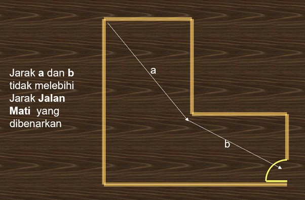
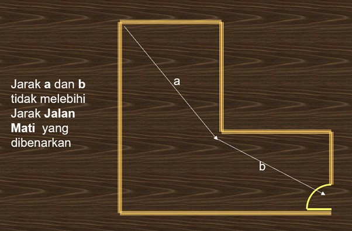
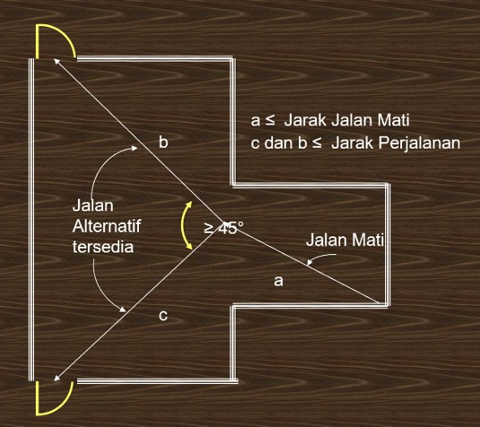
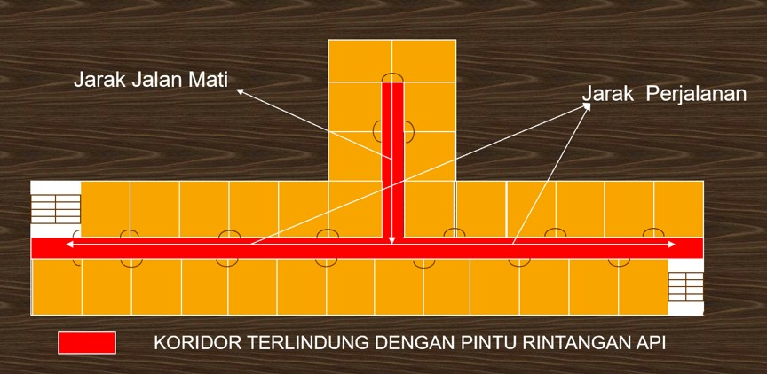
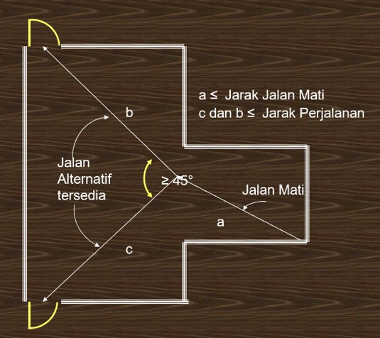
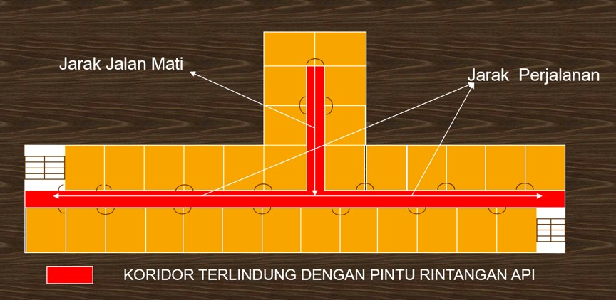

Had Jalan Mati (Dead End Limit)
Had Jalan Mati merujuk kepada jarak maksimum yang dibenarkan dalam koridor atau laluan di mana penghuni hanya mempunyai satu arah sahaja untuk melarikan diri. Sekiranya penghuni berada di hujung jalan mati dan kebakaran berlaku di pintu masuk laluan tersebut, mereka akan terperangkap. Oleh itu, Undang-Undang Kecil Bangunan Seragam (UBBL) 1984 menetapkan had yang ketat untuk jarak ini bagi memastikan keselamatan.
Jalan mati (dead end) ertinya sesuatu kawasan yang pelepasan diri daripadanya hanya boleh dilakukan melalui satu arah sahaja dan dalam sesuatu pelan terbuka termasuklah mana-mana tempat yang jalan terus darinya kepada pintu keluar lain mencakupi suatu sudut yang kurang dari 45 darjah. Penyelesaian bagi masalah jalan mati ialah dengan mengadakan pilihan jalan keluar lain. Tetapi perlu diingat tidak semestinya ada dua pintu masalah jalan mati ini akan selesai. Jika tersilap meletakkan pintu keluar, masalah jalan mati tidak akan selesai. Rajah-rajah berikut menunjukkan beberapa contoh jalan mati.
 

 



Adalah penting untuk ambil perhatian bahawa reka bentuk yang ideal sentiasa mengutamakan laluan keluar dari dua arah. Jalan mati perlu dielakkan seboleh mungkin dalam perancangan bangunan. Jika tidak dapat dielakkan, ia mesti mematuhi had jarak yang ditetapkan dengan ketat untuk memastikan tiada sesiapa yang terperangkap semasa kecemasan.